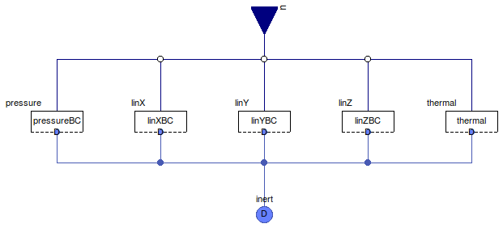

Table of Contents
- User's Guide
- BCs
- Sensors
- Assemblies
- Regions
- Subregions
- Connectors
- Characteristics
- Units
- Quantities
- BaseClasses
Download
- Latest: FCSys-2.0.zip (**Please check back soon or contact kdavies4 at gmail.com.)

| Name | Description |
|---|---|
| Species | BC for the InertDalton connector, e.g., of a Species model |
| BCs for additivity of pressure | |
| Mechanical BCs | |
| BCs for heat | |
| Base classes (not for direct use) |
 FCSys.BCs.InertDalton.Species
FCSys.BCs.InertDalton.Species
| Type | Name | Default | Description |
|---|---|---|---|
| Pressure | |||
| Volume | pressureBC | redeclare Pressure.Volume pr... | Condition |
| X component of linear momentum | |||
| Boolean | inclLinX | true | Include |
| Force | linXBC | redeclare Mechanical.Force l... | Condition |
| Y component of linear momentum | |||
| Boolean | inclLinY | true | Include |
| Force | linYBC | redeclare Mechanical.Force l... | Condition |
| Z component of linear momentum | |||
| Boolean | inclLinZ | true | Include |
| Force | linZBC | redeclare Mechanical.Force l... | Condition |
| Heat | |||
| HeatFlowRate | thermal | redeclare Thermal.HeatFlowRa... | Condition |
| Type | Name | Description |
|---|---|---|
| RealInputBus | u | Input bus for external signal sources |
| InertDalton | inert | Single-species connector for linear momentum and heat, with additivity of pressure |
model Species "BC for the InertDalton connector, e.g., of a Species model" extends FCSys.BaseClasses.Icons.BCs.Single; // Pressurereplaceable Pressure.Volume pressureBC( final inclLinX=inclLinX, final inclLinY=inclLinY, final inclLinZ=inclLinZ) constrainedby Pressure.BaseClasses.PartialBC "Condition"; // X component of linear momentum parameter Boolean inclLinX=true "Include";replaceable Mechanical.Force linXBC( final inclLinX=inclLinX, final inclLinY=inclLinY, final inclLinZ=inclLinZ) if inclLinX constrainedby Mechanical.BaseClasses.PartialBC "Condition"; // Y component of linear momentum parameter Boolean inclLinY=true "Include";replaceable Mechanical.Force linYBC( final inclLinX=inclLinX, final inclLinY=inclLinY, final inclLinZ=inclLinZ) if inclLinY constrainedby Mechanical.BaseClasses.PartialBC "Condition"; // Z component of linear momentum parameter Boolean inclLinZ=true "Include";replaceable Mechanical.Force linZBC( final inclLinX=inclLinX, final inclLinY=inclLinY, final inclLinZ=inclLinZ) if inclLinZ constrainedby Mechanical.BaseClasses.PartialBC "Condition"; // Heatreplaceable Thermal.HeatFlowRate thermal( final inclLinX=inclLinX, final inclLinY=inclLinY, final inclLinZ=inclLinZ) constrainedby Thermal.BaseClasses.PartialBC "Condition"; FCSys.Connectors.RealInputBus u "Input bus for external signal sources"; FCSys.Connectors.InertDalton inert(final n_lin=countTrue({inclLinX,inclLinY, inclLinZ})) "Single-species connector for linear momentum and heat, with additivity of pressure"; equation // Pressureconnect(pressureBC.inert, inert); connect(u.pressure, pressureBC.u); // X component of linear momentumconnect(linXBC.inert, inert); connect(u.linX, linXBC.u); // Y component of linear momentumconnect(linYBC.inert, inert); connect(u.linY, linYBC.u); // Z component of linear momentumconnect(linZBC.inert, inert); connect(u.linZ, linZBC.u); // Heatconnect(thermal.inert, inert); connect(u.thermal, thermal.u); end Species;